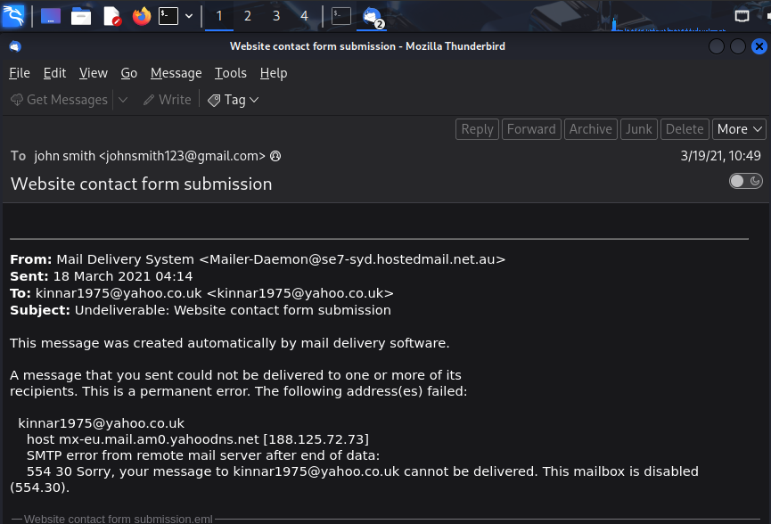
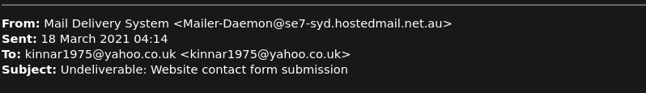
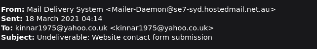
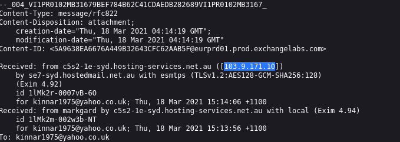
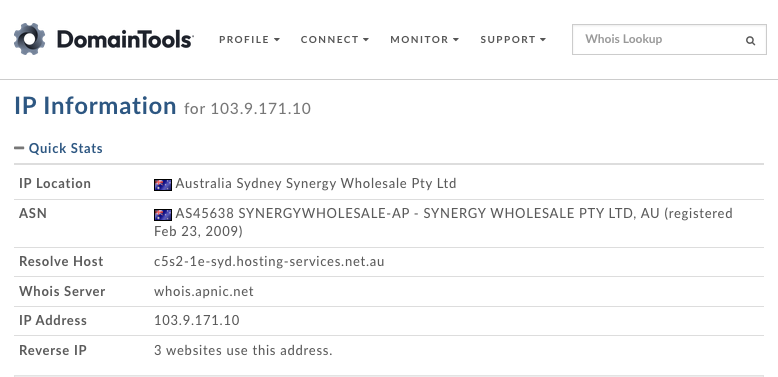
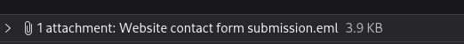
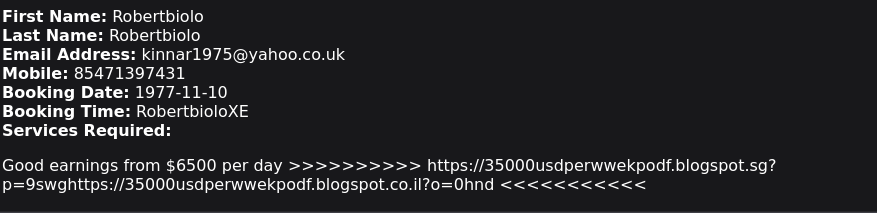
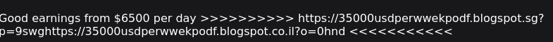
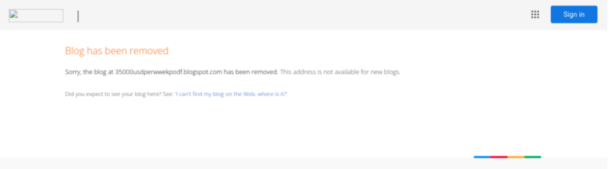

Phishing Analysis
Escenario
Un usuario ha recibido un correo electrónico de phishing y lo ha reenviado al SOC. ¿Puede investigar el correo electrónico y el archivo adjunto para recopilar artefactos útiles?
Preguntas
¿Quién es el principal destinatario de este correo electrónico?
Al examinar el archivo .eml en Thunderbird, se puede observar que el correo electrónico fue dirigido a johnsmith123@gmail.com, como se muestra en el campo "To" ubicado en la parte superior del mensaje.

¿Cuál es el tema de este correo electrónico?
A continuación, podemos identificar el asunto del correo electrónico en el campo "Subject", donde se indica "Undeliverable: Website contact form submission".

¿Cuál es la fecha y hora en que se envió el correo electrónico?
En la misma sección de los encabezados del correo, podemos identificar la fecha y hora de envío en el campo "Sent", donde se muestra 18 March 2021 04:14.

¿Cual es la IP originaria?
Al revisar los encabezados del correo, se encontró la dirección IP 103.9.171.10 en el campo Received, lo que permitió identificar el origen del mensaje.

Realice DNS inverso en esta dirección IP, ¿cuál es el host resuelto? (whois.domaintools.com)
Utilizando la herramienta DomainTools, se realizó una consulta de DNS inverso sobre la dirección IP 103.9.171.10. Como resultado, se identificó el nombre de host asociado a dicha dirección IP.

¿Cuál es el nombre del archivo adjunto?
Al revisar la sección de archivos adjuntos del correo, se identifica un archivo asociado al mensaje, cuyo nombre puede observarse directamente en la parte superior de la ventana.

¿Cuál es la URL que se encuentra dentro del archivo adjunto?
En el contenido del archivo adjunto se observa una URL, la cual puede extraerse para continuar con el análisis del posible correo de phishing.

¿En qué servicio se aloja esta página web?
La URL utiliza el dominio Blogspot, el cual corresponde al servicio Blogger de Google. Esto permite concluir que la página web se encuentra alojada en dicha plataforma.

Usando URL2PNG, ¿cuál es el texto del encabezado en esta página? (¡No importa si la página ha sido eliminada!)
Utilizando la herramienta URL2PNG para obtener una vista previa del sitio web, se pudo comprobar que la página había sido eliminada. Aun así, fue posible identificar el texto principal del encabezado mostrado en la captura.

Conclusión
El phishing sigue siendo una de las técnicas más utilizadas por los atacantes, ya que puede engañar a cualquier persona mediante correos que aparentan ser legítimos. Por ello, es importante verificar siempre el remitente, los enlaces y los archivos adjuntos antes de interactuar con ellos. Además, debemos desconfiar de mensajes que prometan ganancias fáciles, generen urgencia o soliciten acciones inmediatas. La prevención y el análisis cuidadoso son fundamentales para reducir el riesgo de ser víctima de este tipo de ataques.